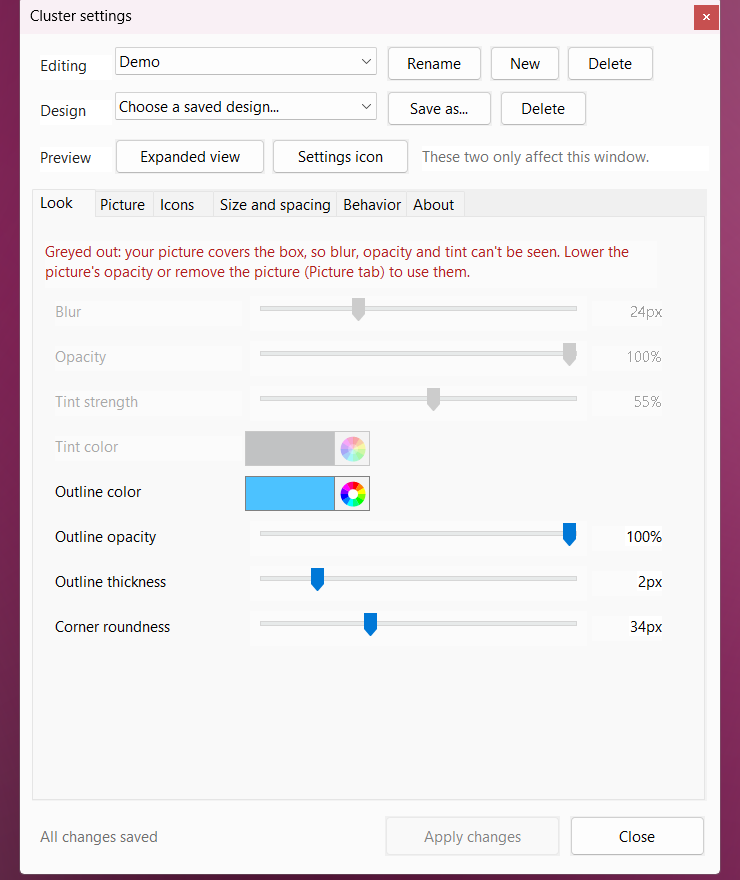

Why you might like it
Opens like a phone folder
A cluster shows a few shortcuts and opens on click to reveal the rest. Drag icons to re-order them.
Looks like it belongs
Blurred wallpaper, tint, outline and rounded corners you control. Or use your own picture with an overlay color.
Practically free
Nothing runs while idle (measured 0% CPU). Roughly 11-14 MB per cluster, 2 MB executable.
As many as you want
Every cluster has its own icons, position and look. Save a design once, reuse it on all of them.
Survives Win+D
Clusters stay on screen when you show the desktop, and snap to your desktop icon grid.
Friendly settings
Live preview, Apply / Cancel, a hint on every control, and a built-in About page.
Customize everything, with a window instead of a config file

- Look: blur, opacity, tint, outline, corner roundness
- Picture: background picture, overlay color, zoom, position
- Icons: automatic or exact icons per row and column, mini preview, sorting
- Size and spacing: icon size, padding and spacing for closed and expanded views
- Behavior: snap to grid, expand from center or top-left, settings icon, start with Windows
Quick start
| Install | Download the zip from Releases, unzip anywhere and run ClusterWidget.exe. |
|---|---|
| Add icons | Drop files, folders, programs or shortcuts onto the box. |
| Open / close | Click it to open. Esc or a click elsewhere closes it. |
| Settings | Hover the cluster and click the gear, right-click it, or use the tray icon. |
| More clusters | Right-click, New cluster. |
The app is not code-signed, so SmartScreen may warn the first time: choose More info, then Run anyway.